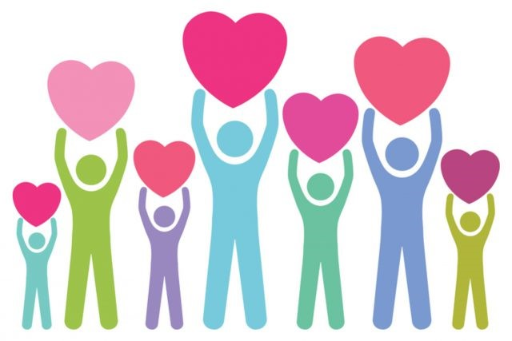

Faça parte dessa história
Crianças e adolescentes acolhidos precisam de pessoas como você. Seja voluntário ou contribua com uma doação e ajude a transformar vidas.
Quem somos
Somos uma organização não governamental e sem fins lucrativos que, há 34 anos, acolhe crianças e adolescentes que estão sob medida protetiva, conforme estabelecido no art. 101 do Estatuto da Criança e do Adolescente – ECA.
Realiza um trabalho que viabiliza a preservação dos vínculos afetivos, familiares e sociais, bem como a provisoriedade do acolhimento institucional e um retorno efetivo ao ambiente familiar, priorizando a criança e o adolescente como participantes ativos na construção da sua história de vida, exercendo sua própria autonomia social como cidadãos pertencentes à sociedade civil.
Institucional
Visão
Ser uma instituição de acolhimento em referência no Estado de São Paulo e entorno, ofertando atendimento efetivo, integral e ininterrupto às crianças e adolescentes e suas famílias em situação de risco e vulnerabilidade social, garantindo-lhes seus direitos estabelecidos no Estatuto da Criança e do Adolescente e nas Orientações Técnicas dos Serviços de Acolhimento para Crianças e Adolescentes.
Missão
Proporcionar um ambiente acolhedor e saudável, propício ao desenvolvimento integral das crianças e adolescentes acolhidos na entidade, vítimas de maus-tratos, negligência e vulnerabilidade biopsicossocial, trabalhando seu cognitivo e sua sociabilidade e proporcionando participações que contemplem o direito à cultura e à espiritualidade, com vistas ao exercício pleno da cidadania, objetivando um retorno efetivo para a família de origem ou substituta, ou ainda a reintegração social com uma vida autônoma e independente após o alcance da maioridade civil, preservando seu direito à convivência familiar e comunitária.
Valores
- Ética
- Transparência
- Respeito à individualidade
- Valorização da família
- Inclusão social